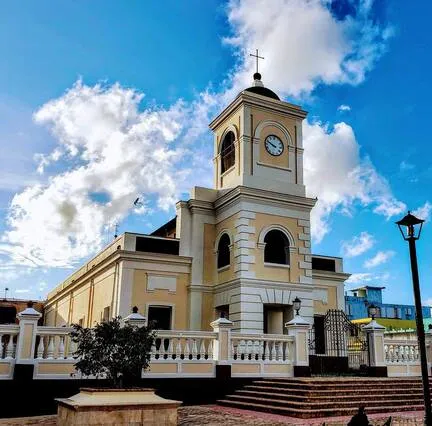

Catedral Santiago Apóstol
Según los datos más antiguos del Archivo Parroquial, fue fundada en el año 1766 y el 18 de septiembre de 1984 fue incluida en el Registro Nacional de Lugares Históricos del Servicio de Parques Nacionales adscrito al Dep.Del Interior de los E.U de Norte América. En el 2008 el padre Benedicto XVI erigió la Diócesis de Fajardo-Humacao designando como Catedral de dicha diócesis a la Parroquia Santiago Apóstol de Fajardo.
Más Información